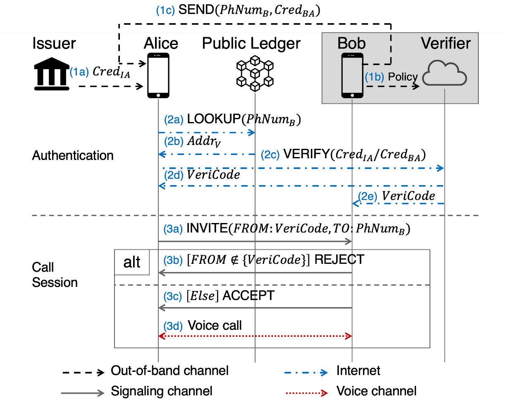

Unwanted Call Blocking Using Anonymous Authentication

End-2-End Anonymous Authentication and One-Time Verification Code
In this project, we are designing a system called UCBlocker. It allows the callee to authenticate the caller based on the caller's attributes instead of phone numbers. We use anonymous credentials (ACs) for caller authentication. Before making a phone call, the caller is required to provide proof of certain attributes in her identity which satisfy the callee's pre-defined policies. The callee will issue a verification code to the caller if the authentication is successfully completed, which is inspired by two-factor authentication used by some web services. UCBlocker binds the authentication over data channel to the call session in telephone networks using this verification code. Functionally, our design will: 1) allow calls from the callee’s contacts with minimal disruption; 2) allow unknown but callee-defined welcome calls to reach the callee; and 3) effectively block all unwanted calls out of the callee's preferences. Considering the numerous advantages for consumers including enhanced fraud protection, reduced disturbance and frustration, and less wasted time, as well as benefits to businesses and governments such as increasing the likelihood of customer engagement and enhancing trust, we hope UCBlocker will rebuild trust in telephone networks and revitalize the use of phone calls.
Proposed Work
◾ Collaborate with the Decentralized Identifiers (DIDs) and Self-Sovereign Identity (SSI) community to advocate the application and deployment of DID and SSI based on cryptographically verifiable anonymous credentials.
◾ Implement advanced predicate logics for the attributes of multiple credentials.
◾ Extend the implementation of UCBlocker to real world mobile applications and provide the user-controlled unwanted call blocking service to the public. Design the hardware based UCBlocker Box to protect landline phones.